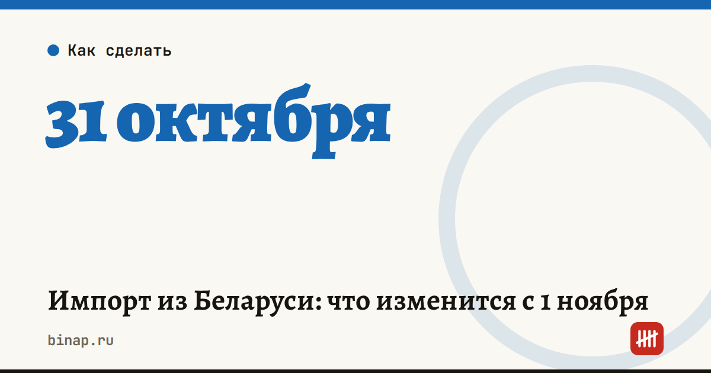

Импорт из Беларуси: что изменится с 1 ноября

Сроки, изменения и разборы для ИП и самозанятых — каждое утро в Telegram и MAX. Подпишитесь, чтобы не пропустить.
Ввозите товар из Беларуси? До конца октября обеспечительный платёж вносить не нужно, но документ о предстоящей поставке всё равно придётся заполнить без ошибок.
Что это значит: - Освобождение от обеспечительного платежа для поставок из Беларуси действует до 31 октября 2026 года, если поставщик — белорусская организация или ИП (Постановление Правительства от 29.05.2026 № 641). - Перед ввозом нужно сформировать ДОПП, внести платёж и получить QR-коды для перевозчика. С 1 ноября освобождение для таких поставок заканчивается; основание — Федеральный закон от 17.04.2026 № 101-ФЗ. - ФНС называет частые ошибки в платёжке: КБК, ИНН и КПП сторон, 8-значный ОКТМО, статус плательщика 01 и нули в реквизитах 106–109. - Сумма обеспечения должна покрывать платёж из ДОПП; ошибки часто возникают из-за округления, курса валюты и количества товара. - Для белорусских поставок до 31 октября заполните три графы: 1Д — код 2 (временное освобождение) или 1 (постоянная льгота), 1Е — реквизиты акта-основания (например, № 641), 1.1 — сумма 0. Без них система продолжает ждать обеспечение.
Что сделать сейчас: - До 31 октября оформите ДОПП по ближайшим партиям с графами 1Д, 1Е и 1.1. - На ноябрь заранее посчитайте, сколько обеспечения придётся «заморозить» на партию. Сумму берите из своего ДОПП: в источниках она не названа. - Сверьте реквизиты платёжного поручения со списком ошибок выше. - Поставьте в календарь 1 ноября и уточните порядок у своего таможенного брокера.
Частые вопросы Нужно ли до 31 октября вносить платёж? Для поставок от белорусской организации или ИП — нет, но графы 1Д, 1Е и 1.1 заполнять надо.
Что будет, если не заполнить графы? По данным ФНС, система продолжит ожидать обеспечение, и подача задержится.